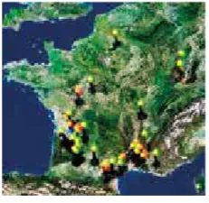
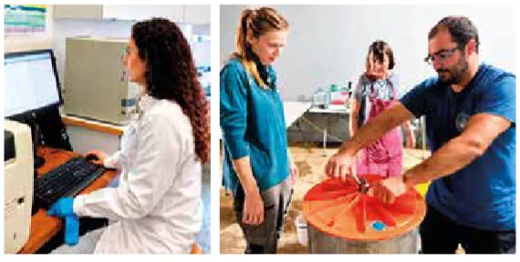
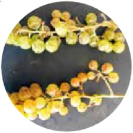
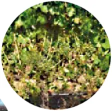
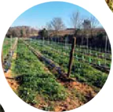
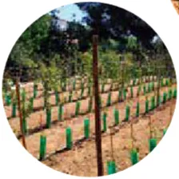
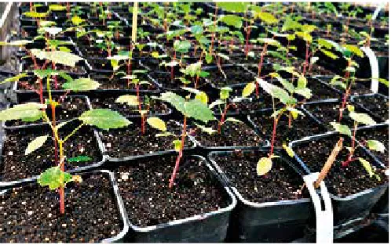

Capítulo 05 · Harmonização de posições
Harmonização de posições
Ultrapassar a visão reação retro-orientada. Proposta para favorecer a harmonização de posições entre as instituições e personalidades da fileira vitivinícola em torno das novas castas resistentes em Portugal, através da implementação de um programa oficial de experimentação, assente numa plataforma de acesso livre para todo o setor vitivinícola, denominada "Castas Novas Resistentes"
Objetivo: Promover um consenso nacional através de um processo transparente, baseado no acompanhamento independente de avaliação científica de ensaios com castas vitícolas resistentes. O programa deverá estabelecer prazos claramente definidos, garantindo a realização de estudos científicos e técnicos que permitam avaliar a adaptação agronómica, fitossanitária e enológica destas castas às diferentes regiões vitivinícolas e às condições edafoclimáticas de Portugal. Os resultados obtidos deverão constituir uma base objetiva para apoiar futuras decisões técnicas, regulamentares e estratégicas relativas à eventual integração destas castas na viticultura nacional.
Proposta de colaboração
Propõe-se que o Projeto PEPAC C115, desenvolvido pela PLANSEL, em colaboração com a Universidade de Évora, o INIAV, a VITICERT e os restantes parceiros científicos e técnicos, e complementado pelas atividades do projeto VITISAFE da Universidade de Évora, possa desenvolver e validar um modelo nacional de instalação, monitorização e avaliação técnico-científica de castas vitícolas resistentes, em estreita articulação com as entidades públicas competentes.
Este modelo terá natureza exclusivamente científica e experimental, destinando-se a definir metodologias harmonizadas para a instalação de ensaios, recolha de dados agronómicos, fitossanitários, enológicos, ambientais e económicos, bem como critérios de avaliação comparáveis entre as diferentes regiões vitivinícolas portuguesas.
O objetivo não é antecipar qualquer decisão regulamentar, mas disponibilizar ao Ministério da Agricultura, ao IVV, à DGAV e ao INIAV um instrumento técnico validado que possa, futuramente, apoiar a definição de um eventual enquadramento nacional, caso as circunstâncias técnicas, ambientais, económicas ou legislativas o venham a justificar.
Desta forma, Portugal poderá acompanhar a evolução científica e tecnológica já em curso noutros Estados-Membros da União Europeia, permitindo ao setor vitivinícola nacional adquirir experiência em condições reais de produção, reforçar a sua competitividade e preparar-se para responder aos desafios das alterações climáticas e da sustentabilidade, sem que tal implique, nesta fase, qualquer alteração do atual regime legal aplicável às castas autorizadas para produção de vinho.
O conhecimento gerado constituirá um património científico nacional ao serviço da Administração Pública e do setor vitivinícola, facilitando, no futuro, a adoção de decisões fundamentadas em evidência técnica produzida em Portugal.

Remetemos para o capítulo 4, onde referimos a proposta para seguirmos o exemplo de França com um esquema de experimentação monitorizada com denominação “OSCAR”, com cuja ideia concordamos, mas com base de um esquema próprio correspondente à situação específica em Portugal.
Portugal possui condições edafoclimáticas muito distintas das restantes regiões vitícolas europeias. Consequentemente, a adaptação destas novas castas não poderá ser extrapolada a partir de resultados obtidos noutros países, tornando indispensável a realização de ensaios científicos em território nacional. Paralelamente, Portugal dispõe de um património varietal único no mundo, constituído por centenas de castas autóctones, que representam um valor estratégico para a identidade dos vinhos portugueses. Qualquer processo de avaliação de novas castas resistentes deverá, por isso, salvaguardar este património, assegurando que todas as comparações sejam efetuadas relativamente às castas tradicionais de referência de cada região vitivinícola.


na microvinificação.
Prioridade 1: Estudo molecular por técnica PCR O viveiro PLANSEL conta com o estudo molecular realizado no núcleo Mitra da Universidade de Évora com a Professora Hélia Cardoso
Prioridade 2: Controlo do vinho, antes da experimentação oficial. A PLANSEL conta com a colaboração da Professora Carmo Vasconcelos para a realização de microvinificação dos candidatos de castas internacionais e da própria transformação nas instalações próprias.
Prioridade 3: Selecionar genótipos com elevada produtividade para garantir rentabilidade ao viticultor.
Os resultados da pré-avaliação do comportamento agronómico e enológico do projeto PLANSEL/Universidade de Évora serão entregues ao IVV com base para autorização de uma experimentaçã o controlada e documentada. Neste contexto, propõe-se a criação da Plataforma Nacio-
nal PIWI-Portugal, concebida como uma infraestrutura técnico-científica de âmbito nacional, destinada a apoiar, de forma objetiva e transparente, a instalação, monitorização e avaliação de ensaios experimentais de castas vitícolas resistentes. A Plataforma científica e o setor vitivinícola, promovendo a produção de conhecimento harmonizado e comparável entre as diferentes regiões, deverá constituir um instrumento permanente de colaboração entre a Administração Pública e as instituições do país. Neste contexto, a criação de uma Plataforma Nacional permitirá:
• harmonizar metodologias experimentais;
• evitar duplicação de esforços;
• assegurar comparabilidade entre regiões;
• disponibilizar informação técnica credível aos setores
administrativos, científicos e profissionais
• apoiar futuras decisões das entidades competentes.
Plano estratégico para preparar a experimentação PIWI da PLANSEL/Univ. ÉVORA
Iniciar em 2028 com plantações de Modelo 1, nas vinhas da Universidade de Évora, na INIAV Dois Portos, outra em colaboração com a AVIP, na região de Setúbal/Palmela (utilizando no mínimo 30 plantas por cada entrada);
a. Autorizar nos anos 2030 a instalação de campos de experimentação para o setor profissional monitorizada e com regras fixas a serem definidas em colabo ração com o IVV.
b. Disponibilizar acesso de forma estruturada para a plataforma com algarismo de análise comparativa.
c. Definir condições finais pela admissão a certificação e consequente autorização para produção de vinho. 1. Objetivos A plataforma pretende:
• disponibilizar um sistema nacional para submissão de
pedidos de instalação de ensaios experimentais de
castas PIWI;
• uniformizar protocolos de instalação, monitorização e
avaliação;
• assegurar a recolha normalizada de informação agro-
nómica, fenológica, fitossanitária e enológica;
• criar uma base nacional de dados comparáveis entre
regiões vitivinícolas;
• disponibilizar informação técnica ao setor vitivinícola;
• garantir que todos os ensaios sejam conduzidos se-
gundo protocolos científicos uniformizados;
• criar uma base de dados nacional com informação
comparável entre regiões;
• apoiar o IVV e as restantes entidades competentes na
futura avaliação de novas castas para utilização na
produção de vinho. 2. Entidades participantes A coordenação científica deverá envolver:
• Instituto da Vinha e do Vinho (IVV);
• Direção-Geral de Alimentação e Veterinária (DGAV);
• INIAV;
• Universidades portuguesas;
• Comissões Vitivinícolas Regionais (CVR) envolvidas;
• Organizações profissionais do setor;
• Empresas e organismos com iniciativa em melhora-
mento interespecífico (obtenção de resistência). 4. Funcionamento da Plataforma 4.1 Registo do requerente Cada produtor com campo experimental deverá efetuar o seu registo na plataforma indicando:
• identificação da exploração (georreferencia oficial)
• responsável técnico
• contactos
• localização da parcela (coordenadas GPS)
• região vitivinícola
• Indicação da parcela do ensaio 4.2 Pedido de instalação do ensaio O pedido deverá incluir:
• casta PiWi pretendida
• origem certificada do material vegetal
• porta-enxerto utilizado
• número de plantas
• compasso
• sistema de condução
• tipo de solo
• altitude
• exposição
• regime hídrico
Apenas poderão ser utilizadas castas PIWI previa-
mente autorizadas pelo IVV para fins experimentais. 5. Condições obrigatórias do ensaio Cada ensaio deverá cumprir obrigatoriamente os seguintes requisitos:
• mínimo de 30 plantas por casta
• máximo de 1.000 plantas por casta
• utilização de material vegetal certificado
• identificação georreferenciada da parcela
• duração mínima de três campanhas vitícolas consecutivas 6. Castas de referência Para permitir uma avaliação objetiva da adaptação regional, cada ensaio deverá incluir obrigatoriamente a comparação com:
• uma casta branca autóctone de reconhecida importância económica na respetiva região
• uma casta tinta autóctone de reconhecida importância económica na respetiva região
Esta comparação permitirá avaliar o comportamento relativo das novas castas PiWi nas diferentes condições edafoclimáticas portuguesas. 7. Recolha de dados Os dados deverão ser recolhidos anualmente por técnicos pertencentes a instituições independentes, designadamente:
• Universidades
• INIAV
• Institutos Politécnicos
• Comissões Vitivinícolas Regionais
• Associações Técnicas reconhecidas
• Outras entidades científicas acreditadas
Todos os dados serão validados antes da sua integração definitiva na plataforma. 8. Descritores obrigatórios A. Caracterização da parcela
• Região vitivinícola
• Localização GPS
• Altitude
• Exposição
• Tipo de solo
• Precipitação
• Temperaturas médias B. Fenologia
• Data de abrolhamento
• Início da floração
• Plena floração
• Pintor (quando aplicável)
• Maturação
• Data de vindima C. Desenvolvimento vegetativo
• Vigor
• Fertilidade
• Desenvolvimento vegetativo
• Maturação da madeira D. Produção
• Produção por planta (kg/planta)
• Produção por hectare (t/ha)
• Peso médio do cacho
• Peso médio do bago E. Resistência fitossanitária Avaliação anual da incidência de:
• Míldio
• Oídio
• Botrytis
• Black Rot
• (Mais tarde, Xylella fastidiosa)
Utilização de escalas normalizadas de avaliação. F. Parâmetros enológicos No momento da vindima deverão ser registados:
• Grau alcoólico provável
• Açúcares
• Acidez total
• pH
• Produção de mosto G. Avaliação sensorial Cada vinho experimental deverá ser objeto de microvinificação segundo protocolo uniforme.
A avaliação sensorial será realizada exclusivamente por um painel constituído por enólogos oficialmente reconhecidos. Serão avaliados, entre outros:
• Intensidade aromática
• Tipicidade varietal
• Equilíbrio
• Estrutura
• Persistência
• Qualidade global 9. Validação científica Todos os dados introduzidos na plataforma serão validados pela entidade responsável pelo acompanhamento técnico de cada uma das entidades para a experimentação, e devem corresponder ao esquema fixo da introdução de dados na plataforma.
10. Índice de aptidão: Este indicador viabiliza a comparação objetiva do desempenho agronómico e enológico de cada casta em diferentes regiões do país.
Critério Peso
Resistência a doenças 30 %
Qualidade enológica 30 %
Produção 30 %
Outros 10 % 11. Área Pública da Plataforma A plataforma deverá disponibilizar ao público:
• Ponderação sobre a localização pública das parcelas
• Mapa interativo nacional dos ensaios
• Localização das parcelas experimentais
• Fichas técnicas das castas PiWi autorizadas para ensaio
• Resultados médios por região
• Relatórios anuais
• Publicações científicas
• Recomendações técnicas
Os dados individuais de cada exploração agrícola permanecerão protegidos, sendo apenas divulgados resultados agregados, em conformidade com a legislação de proteção de dados.
12. Benefícios esperados para o IVV e restantes entidades oficiais do setor vitivinícola português
• Acesso a informação objetiva e comparável
• Apoio técnico à futura avaliação de novas castas
• Maior transparência e fundamentação científica no processo de decisão
• Redução do uso de produtos fitofarmacêuticos
• Melhoria da sustentabilidade ambiental
• Preservação da identidade regional através da comparação obrigatória com castas autóctones de referência
• Reforço da competitividade da viticultura portuguesa perante os desafios das alterações climáticas 13. Estrutura Institucional Propõe-se que a Plataforma seja coordenada através de uma Comissão Nacional de Acompanhamento composta por representantes de:
• Ministério da Agricultura
• Instituto da Vinha e do Vinho (IVV)
• Direção-Geral de Alimentação e Veterinária (DGAV)
• Instituto Nacional de Investigação Agrária e Veterinária (INIAV)
• Universidades Portuguesas
• Institutos Politécnicos com competências em Viticultura e Enologia
• Comissões Vitivinícolas Regionais
• Organizações representativas do setor vitivinícola
Sempre que necessário, poderão ser convidados especialistas nacionais ou internacionais. 14. Considerações Finais A criação da Plataforma Nacional PIWI-Portugal constitui uma oportunidade para dotar Portugal de um instrumento moderno de recolha e gestão de conhecimento científico sobre castas vitícolas resistentes, alinhado com as melhores práticas internacionais.
A sua implementação permitirá promover uma estreita colaboração entre a Administração Pública, as instituições científicas e o setor produtivo, disponibilizando uma base de informação sólida, transparente e tecnicamente validada para apoiar a evolução futura da viticultura portuguesa, sempre no respeito pelo enquadramento legal nacional e europeu e salvaguardando o património varietal nacional.
Aviso importante para garantir a conservação de manutenção:
O resultado do processo de experimentação monitorizada será a admissão à certificação. Salienta-se o risco de perda do direito de propriedade industrial antes de ter auto-
rização para produzir vinho, caso se opte pelo sistema nacional, em virtude do cumprimento dos respetivos requisitos formais e da morosidade do procedimento. Comparativamente com o registo internacional, o sistema nacional apresenta determinadas desvantagens. Excurso explicativo:
Reunião com a Direção-Geral Veterinária (DGAV) de Alimentação e– 08/01/2026
Na reunião realizada com os serviços competentes da DGAV, responsáveis pela proteção fitossanitária e pelo material de propagação da videira, foi analisada a crescente dificuldade económica em assegurar a viabilidade da atividade de melhoramento e conservação das castas vitícolas.
Foi salientado que o setor vive atualmente um contexto de reduzida previsibilidade do mercado de plantas de viveiro, resultante da evolução das regras de funcionamento do mercado, da adaptação às políticas públicas e das alterações na procura por parte do setor vitivinícola (desfasamento entre a decisão sobre o apoio e a organização do viveiro pelo viveirista). Esta situação dificulta o planeamento da produção. Assim, os Viveiros PLANSEL têm trabalhado como obtentor, responsável pela metade do material anualmente propagado.
Ao mesmo tempo, a evolução das exigências técnicas e regulamentares, essenciais para garantir a qualidade sanitária e genética do material vegetal, implica um aumento contínuo dos custos de manutenção dos programas de seleção e conservação, nomeadamente:
• desclassificação de campos de pés-mãe devido ao
aumento das falhas nas plantações;
• realização periódica de testes virológicos nas diferentes
categorias de material de propagação;
• necessidade de conservação do material inicial em condi-
ções altamente controladas, tanto em estufa
como em campo.
Estas exigências representam um importante contributo para a qualidade e segurança do setor, mas tornam igualmente mais difícil assegurar a sustentabilidade económica da seleção de conservação a longo prazo.
Em Portugal não existe atualmente um mecanismo económico que remunere de forma contínua o trabalho de conservação das castas e dos clones, como sucede noutros países, através de sistemas de royalties ou de direitos de utilização. Embora existam programas de apoio à investigação e ao desenvolvimento de novas variedades e clones, não existe um modelo equivalente para financiar a conservação permanente do material genético já obtido. Neste contexto, a PLANSEL decidiu transferir para a associação do setor, a VITICERT, os direitos relativos aos clones por si registados e admitidos à certificação (Despacho n.º 6147/2000; 6225/2006, 2.ª série), sem qualquer compensação financeira pelos investimentos realizados ao longo de várias décadas. O objetivo desta decisão é assegurar que os viveiros portugueses continuem, sem dificuldades, a dispor, no futuro, de material de base certificado das principais castas nacionais. Durante a reunião, foi igualmente abordada a questão da proteção jurídica das novas castas resistentes em desenvolvimento.
Foi referido que, no caso da casta Defensor, poderão existir limitações à proteção nacional da variedade, uma vez que a instalação de uma parcela experimental oficialmente identificada, realizada em 2000, poderá ser considerada divulgação anterior para efeitos de proteção varietal. Foi igualmente esclarecido que a utilização da designação comercial da variedade deverá respeitar a legislação aplicável às marcas registadas. Esta experiência evidencia a importância de definir, desde o início dos programas de melhoramento, uma estratégia adequada de proteção da propriedade inte-
Fases de iniciativas Criação de biodiversidade Seleção de redução Avaliação de populações clonais
(pré-avaliação para experimentação controlada)
Experimentação oficial com viticultores Admissão à Certificação
Cronograma obtenção PIWI
Tipo de ação de Fase /Ano melhoramento
Cruzamento em campo. Germinação de grainhas em
Ano 1
estufa. Obtenção de plântulas
Ano 2
selecionadas de semente em vasos.
Estufa: plantação de grainhas
Ano 3
em vasos.
Transplantação em campo
Ano
(pé franco) até comprovar
4 - 7
fertilidade.
Enxertia em porta-enxertos.
Ano
Plantação de populações
8 - 9
clonais.
Fenotipagem simplificado;
Ano
vinificação;
10 – 12
Seleção genótipos +.
IVV autorizar plantações
Ano13
experimentais.
Estudo: (DHL, VAU, localidades
Ano
distintas, MAS, fenotipagem
14 - 18
agronóm. e de resistência).
Apresentar Dossier de
Ano
reconhecimento CNVV.
19 – 21
Instalação de vinhas pés mães
Ano
inicial.
22 - 24
Reconhecimento IVV.
Ano 26
lectual das novas variedades. Por esse motivo, considera-se recomendável privilegiar, sempre que possível, a proteção comunitária das variedades vegetais através do Community Plant Variety Office (CPVO). Regulamento (CE) n.º 2100/94 do Conselho.
Community Plant Variety Office (CPVO); 3 boulevard Maréchal Foch CS 10121 – 49101 Angers Cedex 2 – França, Tel.: +332 41 25 64 00; E-mail: cpvo@cpvo.europa.eu; Website: https://cpvo.europa.eu
Volume Organismo Quantitativo Envolvido
Cruzamento: dezenas PLANSEL
de milhares. Caso pólen IVV
heterogénico: centenas de
milhares. (20% de pegamento na JKi-Gh-(A)
estufa; 800 em campo pé franco).
MAS, vigor, teste visual e
tipicidade V. vinífera. PLANSEL INIAV Univ. Évora
800 plântulas de pé franco em
campo.
* Importação de 40 PIWI
internacionais
* 150 de progenitura nacional PLANSEL ATEVA Univ. Évora
Escolha de populações PIWI
internacionais e nacionais
(vinificação & fenotipagem).
15 genótipos internacionais. PLANSEL IVV INiAV Univ. Évora
150 genótipos nacionais. DGAV (?)
(novo início perpétuo por ATEVA
retrocruzamentos)
Admissão à Certificação
e plantação:
5 castas PIWI internac.ionais
6 castas PIWI nacionais PLANSEL DGAV CVR’s
O processo cronológico com as fases do melhoramento Reconhecimento oficial na lista IVV de castas nacionais 2045 com aptidão à produção de vinho
Processo de admissão à certificação (Dec.-Lei 194/2006)
comprovativos DHL e VAUe comprovativos de resistência sustentável
2038
aptidão à tipicidade enológica regional (CVR’s)

Campos de experimentação
com autorização Reconhecimento IVV
2030
IVV e supervisão de castas PIWI importadas independente

Campo Canal 1
pré-avaliação para a autorização
2024
de adaptação a experimentação oficial

Campo Canal 2
criar biodiveridade

2023
com resistência homozigota
Campo Safira
criar biodiversidade com resistência
2022
heterozigota Nova biodiversidade por retrocruzamento

2019
com projeto I&D: PDR 784-0427467 Vantagens da proteção comunitária (CPVO):
• proteção válida em toda a União Europeia durante um período que pode atingir 30 anos;
• procedimento uniforme e independente para todos os Estados-Membros;
• avaliação técnica efetuada diretamente pelo sistema comunitário, normalmente mais eficiente do que processos exclusivamente nacionais;
• maior segurança jurídica para a valorização económica das novas variedades.
Importa igualmente referir que, após a divulgação pública ou o registo nacional de uma variedade, poderá deixar de ser possível requerer posteriormente a proteção comunitária, pelo que a estratégia de proteção deve ser definida antes da sua disponibilização ao mercado.
A reviravolta pragmática ao sabor dos novos ventos de Bruxelas
O programa de melhoramento para resistência desenvolvido até agora baseava-se no paradigma estabelecido pela regulamentação da UE, segundo o qual todas as videiras modificadas através de métodos de edição genómica (como CRISPR/Cas) ou de transgénese clássica eram uniformemente consideradas Organismos Geneticamente Modificados (OGM/GMO), com a necessidade de uma designação desfavorável na comercialização. Esta situação obrigou a PLANSEL, nos anos 90, com vários programas nacionais e internacionais a favor da transferência de genes de resistência (por agrobacterium e/ou gen gun), a limitar-se à introgressão tradicional por retrocruzamento, como descrito nos anteriores capítulos.
Esta interpretação assentava no caso do projeto PDR 784, acórdão de referência do Tribunal de Justiça da União Europeia (TJUE), de 2018, segundo o qual também as técnicas modernas de engenharia genética estavam sujeitas aos rigorosos requisitos da antiga Diretiva 2001/18/CE. Neste enquadramento, a introdução de características genéticas provenientes de espécies exteriores à Vitis vinifera era considerada uma alteração substancial da variedade. Consequentemente, a designação do vinho produzido teria de incluir, por um lado, uma indicação da sua natureza OGM e, por outro, implicaria a alteração da denominação da variedade autóctone de origem. Esta situação mudou agora, na sequência da surpreendente mudança ideológica do Parlamento Europeu e do Conselho.
O Regulamento (UE) 2026/1388 do Parlamento
Europeu e do Conselho, de 17 de junho de 2026, relativo às plantas obtidas por novas técnicas genómicas e aos produtos delas derivados, entra em vigor no vigésimo dia seguinte ao da sua publicação e é diretamente aplicável em todos os Estados-Membros a partir de 17 de julho de 2028. Os Estados-Membros dispõem, assim, de dois anos para se prepararem para a aplicação das novas regras relativas às plantas NGT, designadamente através da designação da autoridade nacional competente.
As novas técnicas genómicas (NGT) abrangem dois grupos de técnicas:
• Com a Mutagénese dirigida, em especial técnicas de edição do genoma, como a tecnologia CRISPR/Cas («tesoura genética»), é possível modificar ou desativar de forma precisa genes específicos da videira, com o objetivo de aumentar a sua resistência natural a importantes doenças fúngicas, como o oídio e o míldio, sem alterar significativamente as características típicas da casta.
• Cisgénese, mediante a qual, recorrendo a técnicas de engenharia genética, é introduzido exclusivamente material genético proveniente da própria espécie ou de espécies, (tal como e espécies Vitis da América de Norte, incluindo Vitis Muscadínia, e outras daÁsia, consideradas geneticamente compatíveis). As plantas NGT dividem-se em duas categorias: NGT 1 e NGT 2.
• Plantas da categoria NGT 1 são plantas que poderiam igualmente ter resultado de «mutações espontâneas na natureza» ou de técnicas de melhoramento convencional. O Anexo I do Regulamento estabelece uma série de «critérios de equivalência entre plantas NGT e plantas convencionais». No caso de plantas obtidas por mutagénese dirigida, não podem ser substituídos ou inseridos mais de 20 nucleótidos. Essas modificações são permitidas num máximo de três locais dentro de um gene. Quando os nucleótidos são apenas eliminados (deleção), não se aplica esse limite máximo. No caso de plantas cisgénicas da categoria NGT 1, apenas podem ser inseridas sequências de ADN que estejam presentes no conjunto génico disponível para o melhoramento convencional. Caso sequências de ADN existentes sejam modificadas ou recombinadas, o resultado deverá igualmente ocorrer no conjunto génico disponível para utilização no melhoramento convencional.
Alteração dos fatores determinantes: Uma videira modificada por cisgénese pertencente a uma variedade existente agora já não é mais considerada uma nova variedade, mas sim um clone. Às plantas que, após a conclusão do procedimento de verificação, sejam classificadas na categoria NGT 1, são aplicáveis, em princípio, as mesmas regras que às plantas convencionais, podendo estas ser libertadas deliberadamente no ambiente no âmbito de ensaios de investigação e de cultivo, nos termos das disposições aplicáveis.
Plantas da categoria NGT 2: São classificadas todas as plantas obtidas através de novas técnicas genómicas fora dos critérios de equivalência aplicáveis às plantas NGT 1. As plantas da categoria NGT 2, pelo contrário, ficam sujeitas às disposições e aos requisitos aplicáveis na União Europeia aos organismos geneticamente modificados (OGM). Ao contrário do que sucede com as plantas NGT 1, os Estados-Membros podem proibir ou restringir, nos termos previstos no direito da União, o cultivo no seu território de plantas NGT 2 autorizadas.
O procedimento de admissão a certificação decorre diretamente ao nível da União Europeia, nomeadamente perante o Instituto Comunitário das Variedades Vegetais (Community Plant Variety Office – CPVO), sediado em Angers, quando estejam em causa matérias da sua competência.
A União Europeia deverá ainda avaliar em que medida as plantas NGT 1 são compatíveis com os princípios e requisitos aplicáveis à agricultura biológica.
Simulação do resultado PEPAC C115-08990
(a ser decidido em consórcio)
As novas castas resistentes continuarão a representar,
no futuro, numa fase intermediária, a única alternativa
disponível nas regiões climaticamente difíceis, car-
acterizadas por uma elevada humidade ao longo de
todo o período vegetativo, para permitir a produção de
vinho sem recurso a uma proteção fitossanitária inten-
siva, seja ela de natureza biológica ou convencional.
No entanto, uma nova casta resistente só terá, a longo
prazo, possibilidades de se afirmar no mercado se apre-
sentar uma elevada qualidade enológica e um elevado
potencial produtivo.
Com o novo Regulamento (UE) 2026/1388, as castas
PIWI terão de competir com castas autóctones cisge-
neticamente modificadas. Por este motivo, o projeto
PEPAC C115-08990 parte do princípio de que não é
adequada a admissão à certificação de um grande
número de novas castas resistentes.
Previsão para novas castas resistentes como castas autorizadas para a produção de vinho:
2 castas brancas internacionais + 2 castas tintas inter-
nacionais
2 castas brancas nacionais + 2 castas tintas nacionais.